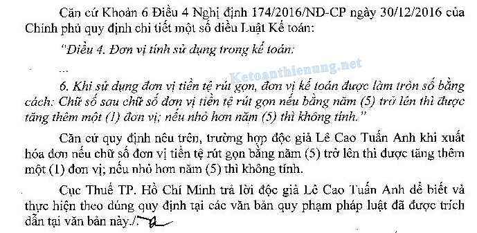
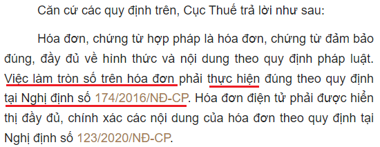
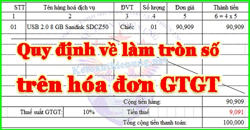

Quy định về làm tròn số trên hóa đơn GTGT điện tử; Cách làm tròn số khi viết hóa đơn GTGT, ghi sổ kế toán theo nguyên tắc làm tròn số trong kế toán tại Nghị định 174/2016/NĐ-CP.
1. Quy định về chữ số trên hóa đơn cụ thể như sau
Theo khoản 13 điều 10 của Nghị định 123/2020/NĐ-CP:
"b) Chữ số hiển thị trên hóa đơn là chữ số Ả-rập: 0, 1, 2, 3, 4, 5, 6, 7, 8, 9. Người bán được lựa chọn: sau chữ số hàng nghìn, triệu, tỷ, nghìn tỷ, triệu tỷ, tỷ tỷ phải đặt dấu chấm (.), nếu có ghi chữ số sau chữ số hàng đơn vị phải đặt dấu phẩy (,) sau chữ số hàng đơn vị hoặc sử dụng dấu phân cách số tự nhiên là dấu phẩy (,) sau chữ số hàng nghìn, triệu, tỷ, nghìn tỷ, triệu tỷ, tỷ tỷ và sử dụng dấu chấm (.) sau chữ số hàng đơn vị trên chứng từ kế toán."
=> Như vậy trên hóa đơn điện tử hiện nay được phép sử dụng chữ số thập phân.
2. Làm tròn số trên hóa đơn giá trị gia tăng được quy định như sau
Theo khoản 6 điều 4 Nghị định 174/2016/NĐ-CP ngày 30/12/2016 của Chính phủ quy định chi tiết một số điều của Luật kế toán:
"Điều 4. Đơn vị tính sử dụng trong kế toán
6. Khi sử dụng đơn vị tiền tệ rút gọn, đơn vị kế toán được làm tròn số bằng cách: Chữ số sau chữ số đơn vị tiền tệ rút gọn nếu bằng 5 trở lên thì được tăng thêm 1 đơn vị; nếu nhỏ hơn 5 thì không tính."
----------------------------------------------------------------
3. Các công văn hướng dẫn về làm tròn số trên hóa đơn GTGT
1. Theo Công văn 19462/CT-TTHT ngày 14/4/2017 của Cục Thuế TP. Hà Nội trả lời Cổng thông tin điện tử - Bộ Tài chính:
"Căn cứ quy định nêu trên, Cục thuế TP Hà Nội hướng dẫn Độc giả như sau:
Trường hợp Công ty của Độc giả khi xuất hóa đơn nếu chữ số sau chữ số đơn vị tiền tệ rút gọn nếu bằng năm (5) trở lên thì được tăng thêm một (1) đơn vị; nếu nhỏ hơn năm (5) thì không tính.
Cục thuế TP Hà Nội trả lời để Cổng thông tin điện tử - Bộ Tài chính được biết và hướng dẫn Độc giả thực hiện./."
-----------------------------------------------------------------
2. Căn cứ theo mục hỏi đáp trên Cổng thông tin điện tử Bộ tài chính: 
Câu hỏi:
- Tôi có thắc mắc làm tròn số trên hóa đơn. Trên hóa đơn ghi, tiền hàng là 645.455đ, tiền thuế 10% là 64.545đ. Tổng tiền thanh toán là 710.000đ.
- Nhưng theo Nghị định số 174/2016/NĐ-CP ngày 30/12/2016 của Chính phủ quy định chi tiết một số điều của Luật kế toán.
“Điều 4. Đơn vị tính sử dụng trong kế toán …
6. Khi sử dụng đơn vị tiền tệ rút gọn, đơn vị kế toán được làm tròn số bằng cách: Chữ số sau chữ số đơn vị tiền tệ rút gọn nếu bằng 5 trở lên thì được tăng thêm 1 đơn vị; nếu nhỏ hơn 5 thì không tính.”
Vậy hóa đơn này có sai không? phải làm tròn tiền thuế là 64.546đ mới đúng.
Trả lời ngày 28/06/2019:
-----------------------------------------------------------------
3. Công văn 10117/CTQNA-TTHT(e) của Cục thuế tỉnh Quảng Nam ngày 29/12/2022: 
---------------------------------------------------------------------------------------
Ví dụ cụ thể:
- Cột thành tiền là: 90.909
- Thuế GTGT 10% sẽ là: 9.090,9
=> Căn cứ theo các quy định trên khi xuất hóa đơn được làm tròn số sau chữ số đơn vị (tức là sau 0 theo ví dụ trên), sau số 0 là số 9 (lớn hơn 5) -> Thì được tăng thêm 1 (nghĩa là 0 +1 = 1)
Như vậy thuế GTGT 10% sẽ được làm tròn như sau: 9.091

------------------------------------------------------------------
Cũng theo khoản 4 và 5 điều 4 Nghị định 174/2016/NĐ-CP quy định:
"4. Đơn vị kế toán trong lĩnh vực kinh doanh khi lập báo cáo tài chính tổng hợp, báo cáo tài chính hợp nhất từ báo cáo tài chính của các công ty con, đơn vị kế toán trực thuộc hoặc đơn vị kế toán cấp trên trong lĩnh vực kế toán nhà nước khi lập báo cáo tài chính tổng hợp, báo cáo tổng quyết toán ngân sách năm từ báo cáo tài chính, báo cáo quyết toán ngân sách của các đơn vị cấp dưới nếu có ít nhất 1 chỉ tiêu trên báo cáo có từ 9 chữ số trở lên thì được sử dụng đơn vị tiền tệ rút gọn là nghìn đồng (1.000 đồng), có từ 12 chữ số trở lên thì được sử dụng đơn vị tiền tệ rút gọn là triệu đồng (1.000.000 đồng), có từ 15 chữ số trở lên thì được sử dụng đơn vị tiền tệ rút gọn là tỷ đồng (1.000.000.000 đồng).
5. Đơn vị kế toán khi công khai báo cáo tài chính, báo cáo quyết toán ngân sách được sử dụng đơn vị tiền tệ rút gọn theo quy định tại khoản 4 Điều này."
---------------------------------------------------------------------
Kế toán Diệu Tâm xin chúc bạn thành công!
------------------------------------------------------------------